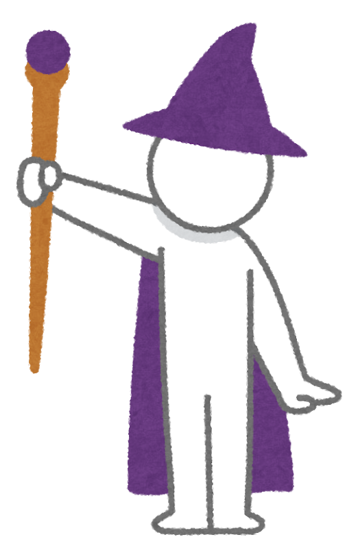
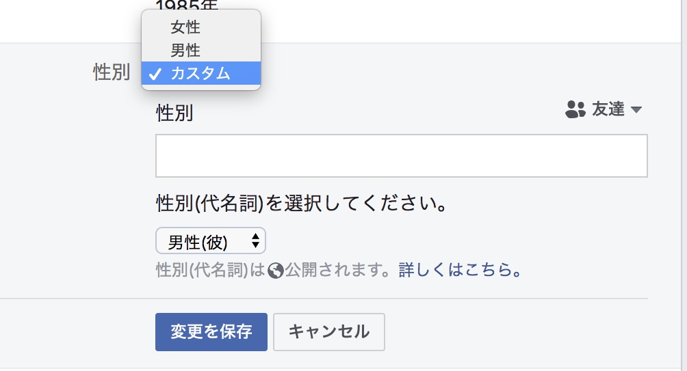

<!doctype html>
<html lang="ja">

<head>
  <meta charset="utf-8">
  <meta name="viewport" content="width=device-width">

  <title>ウェブアクセシビリティ</title>
  <meta name="description" content="">

  <link rel="stylesheet" href="css/reveal.css">
  <link rel="stylesheet" href="css/theme/black.css">
  <link rel="stylesheet" href="css/additional.css">

  <!-- Theme used for syntax highlighting of code -->
  <link rel="stylesheet" href="lib/css/vs2015.css">

  <!-- Printing and PDF exports -->
  <script>
    var link = document.createElement('link');
    link.rel = 'stylesheet';
    link.type = 'text/css';
    link.href = window.location.search.match(/print-pdf/gi) ? 'css/print/pdf.css' : 'css/print/paper.css';
    document.getElementsByTagName('head')[0].appendChild(link);
  </script>
</head>

<body>
  <div class="reveal">
    <div class="slides">
      <section>
        <h1>
          ウェブアクセシビリティ
        </h1>
        <footer>
          <p class="u-taL">
            <small>
              <time datetime="2019-01-23">2019/1/23</time>
              <span class="u-dB u-mt12">
                <span class="u-dIb">トライデントコンピュータ専門学校</span>
                <span class="u-dIb">Webデザイン学科</span>
                <span class="u-dIb">業界研究授業</span>
              </span>
            </small>
          </p>
        </footer>
      </section>
      <section>
        <h2>私</h2>
        <p class="u-taL u-dF -middle -center">
          
          
          <span>
            <ruby class="u-dB">桝田 草一<rp>(</rp><rt>ますだ そういち</rt><rp>)</rp></ruby>
            <a class="u-dB" href="https://twitter.com/masuP9">@masuP9</a>
          </span>
        </p>
      </section>
      <section>
        <h3>略歴</h3>
        <ol style="list-style: circle" class="u-fzS">
          <li>2003 ~ 立命館大学政策科学部</li>
          <li>2007 ~ 株式会社構造計画研究所(営業)</li>
          <li>2014 ~ デジパ株式会社(マークアップエンジニア)</li>
          <li>2017 ~ サイバーエージェント<br />(フロントエンドデベロッパー / アクセシビリティエバンジェリスト)</li>
        </ol>
      </section>
      <section>
        <h2>ウェブアクセシビリティとは</h2>
      </section>
      <section>
        <h3>アクセシビリティ</h3>
        <p class="u-fzL"><b>accessibility</b></p>
        <p class="u-fzL"><b>access</b> + <b>ability</b> = アクセス可能性</p>
      </section>
      <section>
        <h3>アクセスできる</h3>
        <ul>
          <li>知覚できる</li>
          <li>操作できる</li>
          <li>理解できる</li>
          <li>壊れない</li>
        </ul>
      </section>
      <section>
        <h4>知覚できる</h4>
        <p style="color: transparent;">
          隠しテキストとかもう世代的に通じ無さそう
          <small class="u-dIb">今年34歳のボヤキ</small>
        </p>
      </section>
      <section>
        <h4 class="u-mb40">操作できる</h4>
        <div class="u-mt40">
          <span id="dummy-button">
            button
          </span>
          <style>
            #dummy-button {
              padding: 0.5em 3em;
              border-radius: 1000px;
              background: tomato;
            }

            #dummy-button:hover {
              background-color: rgb(203, 45, 17);
              cursor: pointer;
            }
          </style>
        </div>
      </section>
      <section>
        <h4>理解できる</h4>
        <p>আমি একটু অ্যাক্সেসযোগ্যতা দক্ষতা আছে</p>
        <p class="fragment">
            I have a little accessibility skill.<br />
            ワタシハアクセシビリティチョットデキル
        </p>
      </section>
      <section>
        <h4>壊れない</h4>
        <blockquote class="fragment">
          <p>&ldquo;このページ、あのブラウザで見ると崩れているので今日中にご確認お願いできますか？&bdquo;</p>
        </blockquote>
      </section>
      <section>
        <h3>アクセシビリティのお隣さんたち</h3>
        <ul class="u-mt20">
          <li>アベイラビリティ(availability)</li>
          <li>ファインダビリティ(findability)</li>
          <li>ユーザビリティ(usability)</li>
        </ul>
        <p class="u-mt20">明確に区別されず領域は重なる</p>
      </section>
      <section>
        <h2>ウェブをとりまく多様性</h2>
      </section>
      <section>
        <h3>ユーザーの多様性</h3>
      </section>
      <section>
        <h4>およそ14人に1人</h4>
        <div class="fragment">
          <ul>
            <li>身体障害 - 29人に1人</li>
            <li>知的障害 - 111人に1人</li>
            <li>精神障害 - 32人に1人</li>
          </ul>
          <p>
            <a class="u-fzS" href="https://www8.cao.go.jp/shougai/whitepaper/h30hakusho/zenbun/pdf/ref2.pdf">
              <cite>平成30年版 障害者白書 - 障害者の状況</cite>
              PDF
            </a>
          </p>
        </div>
      </section>
      <section>
        <h3>デバイスの多様性</h3>
      </section>
      <section>
        <figure>
          <blockquote>
            
          </blockquote>
          <figcaption>
            <a href="http://bradfrost.com/blog/post/this-is-the-web/">
              <cite>
                this is the web.
              </cite>
              by Brad Frost
            </a>
          </figcaption>
        </figure>
      </section>
      <section>
        <figure>
          <blockquote>
            
          </blockquote>
          <figcaption>
            <a href="http://bradfrost.com/blog/post/this-is-the-web/">
              <cite>
                this is the web.
              </cite>
              by Brad Frost
            </a>
          </figcaption>
        </figure>
      </section>
      <section>
        <figure>
          <blockquote>
            
          </blockquote>
          <figcaption>
            <a href="http://bradfrost.com/blog/post/this-is-the-web/">
              <cite>
                this is the web.
              </cite>
              by Brad Frost
            </a>
          </figcaption>
        </figure>
      </section>
      <section>
        <h3>閲覧環境の多様性</h3>
        <dl class="u-dF -middle -center">
          <div class="u-mr40">
            <dt class="u-taC u-fwN">屋外</dt>
            <dd class="u-ml0"></dd>
          </div>
          <div class="u-mr40 fragment">
            <dt class="u-taC u-fwN">電車の中</dt>
            <dd class="u-ml0"></dd>
          </div>
          <div class="u-mr40 fragment">
            <dt class="u-taC u-fwN">料理中</dt>
            <dd class="u-ml0"></dd>
          </div>
          <div class="u-mr40 fragment">
            <dt class="u-taC u-fwN">運転中</dt>
            <dd class="u-ml0"></dd>
          </div>
        </dl>
      </section>
      <section>
        <h3>〜づらいは誰にでも</h3>
      </section>
      <section>
        <h4>見えづらい（ない）</h4>
        <ol style="list-style: circle;">
          <li>全盲</li>
          <li>ロービジョン</li>
          <li>コンタクト外した</li>
          <li>高齢者</li>
          <li>後ろの方の席</li>
          <li>眩しい環境</li>
        </ol>
      </section>
      <section>
        <h4>きこえづらい（ない）</h4>
        <ol style="list-style: circle;">
          <li>失聴</li>
          <li>難聴</li>
          <li>イヤホン忘れた</li>
          <li>高齢者</li>
          <li>授業中</li>
          <li>うるさい環境</li>
        </ol>
      </section>
      <section>
        <h4>操作しづらい（できない）</h4>
        <ol style="list-style: circle;">
          <li>全身不随</li>
          <li>四肢欠損</li>
          <li>怪我した</li>
          <li>高齢者</li>
          <li>マウスが壊れた</li>
          <li>手袋している</li>
        </ol>
      </section>
      <section>
        <div class="u-taL u-fzL" style="width: 70%; margin: 0 auto;">
          <p>誰かの使いにくいは、<br />誰かには使えない。</p>
          <p>誰かの使えるは、<br />誰かには使いやすい。</p>
        </div>
      </section>
      <section>
        <h3>多様であることの価値</h3>
        <ul class="u-dF -center" style="list-style: none;">
          <li></li>
          <li></li>
          <li></li>
          <li></li>
        </ul>
        <ul class="fragment u-dF -center" style="list-style: none;">
          <li></li>
          <li></li>
          <li></li>
          <li></li>
        </ul>
      </section>
      <section>
        <h3>多様性の尊重</h3>
        <figure>
          <blockquote>
            
          </blockquote>
          <figcaption>
            <a href="https://www.facebook.com/"><cite>https://www.facebook.com/</cite></a>
          </figcaption>
        </figure>
      </section>
      <section>
        <h2>アクセシブルなウェブの作り方</h2>
      </section>
      <section>
        <h3>HTMLをきちんと書く</h3>
        <p><em>ガチ本当のマジでマジ</em></p>
      </section>
      <section>
        <ul>
          <li>分かりやすい <code>&lt;title&gt;</code></li>
          <li>見出しは <code>&lt;h1&gt;</code> ~ <code>&lt;h6&gt;</code></li>
          <li>リンクは <code>&lt;a href&gt;</code>、ボタンは <code>&lt;button&gt;</code></li>
          <li>&lt;input&gt;には&lt;label&gt;</li>
          <li><code>&lt;img&gt;</code>には<code>alt</code>属性を書く</li>
        </ul>
      </section>
      <section>
        <h3>Read the HTML Living Standard</h3>
        <p><a href="https://html.spec.whatwg.org/multipage/#toc-semantics">4 The elements of HTML</a></p>
      </section>
      <section>
        <h3>デザイン</h3>
        <ul>
          <li>色に頼らない</li>
          <li>動くものは止められる</li>
        </ul>
      </section>
      <section>
        <p><a href="https://memo.ark-under.net/memo/3588">『いらすとや』の素材を色覚障がいの視点から見てみた | くろひつじのメモ帳</a></p>
      </section>
      <section>
        <h2>スクリーンリーダーを触ってみよう</h2>
      </section>
      <section>
        <ol>
          <li>スクリーンリーダーとは</li>
          <li>macOS VoiceOver について</li>
          <li>スクリーンリーダーでウェブを読み上げてみる</li>
        </ol>
      </section>
      <section>
        <h3>スクリーンリーダーとは</h3>
        <p>コンピューターの画面を読み上げるソフトウェア</p>
      </section>
      <section>
        <h4>いろいろなスクリーンリーダー</h4>
        <dl>
          <dt>Windows</dt>
          <dd>ナレーター（標準）</dd>
          <dd>NVDA（オープンソース）</dd>
          <dd>JAWS for Windows</dd>
          <dd>PC Talker（日本シェアNo1）</dd>
          <dt>macOS/iOS</dt>
          <dd>VoiceOver</dd>
          <dt>Android</dt>
          <dd>Android Accessibility Suite（旧TalkBack）</dd>
        </dl>
      </section>
      <section>
        <h4>スクリーンリーダーの使われ方</h4>
        <p><a href="https://www.apple.com/jp/accessibility/stories/">アクセシビリティ - ストーリー - Apple（日本）</a></p>
      </section>
      <section>
        <h3>macOS VoiceOver</h3>
        <ul>
          <li>macOS 標準のスクリーンリーダー</li>
          <li>読み上げている箇所がハイライト（拡大）される</li>
          <li>読み上げている内容が表示される</li>
          <li>HTML/DOMの知識が比較的求められる</li>
        </ul>
      </section>
      <section>
        <h3>macOS VoiceOverの起動</h3>
        <dl class="u-fzS">
          <dt>起動/解除</dt>
          <dd><kbd>⌘ + F5</kbd></dd>
          <dd>システム環境設定 👉 アクセシビリティ 👉 VoiceOver</dd>
        </dl>
      </section>
      <section>
        <h3>VoiceOverの基本</h3>
        <p class="u-fzL">
          VOキー (<kbd>control + option</kbd>) or caps
        </p>
      </section>
      <section>
        <dl>
          <dt>領域の移動</dt>
          <dd>VO(<kbd>control + option</kbd>) + →|←</dd>
          <dt class="u-mt20">領域に入る/出る</dt>
          <dd>VO(<kbd>control + option</kbd>) + ↓|↑</dd>
          <dt class="u-mt20">実行（クリック）</dt>
          <dd>VO(<kbd>control + option</kbd>) + スペース</dd></dd>
        </dl>
      </section>
      <section>
        <h3>スクリーンリーダーでウェブを読み上げてみる</h3>
      </section>
      <section>
        <h4>まずは操作になれる</h4>
        <p><a href="http://computer.trident.ac.jp/">学校法人 河合塾学園 トライデントコンピュータ専門学校</a>のトップページからウェブデザイン学科のページに移動してみよう</p>
        <p>トップページを開いてから起動すると楽</p>
      </section>
      <section>
        <h4>見出しジャンプ</h4>
        <dl>
          <dt>次の見出し</dt>
          <dd>VO(<kbd>control + option</kbd>) + ⌘(command) + h</dd>
          <dt class="u-mt20">前の見出し</dt>
          <dd>VO(<kbd>control + option</kbd>) + ⌘(command) + shift + h</dd>
        </dl>
      </section>
      <section>
        <h4>ウェブを読み上げてみる</h4>
        <p>最新の内定者情報でサイバーエージェントに内定した人はだれ？</p>
        <p>目をつぶってやってみよう</p>
      </section>
      <section>
        <div>
          <h2>まとめ</h2>
        </div>
        <ul>
          <li>ウェブは多様な使われ方をするメディア</li>
          <li>多様な使われ方に耐える高品質なウェブを</li>
          <li>HTMLをちゃんと書く</li>
        </ul>
      </section>
  </div>

  <script src="lib/js/head.min.js"></script>
  <script src="js/reveal.js"></script>
  <script async src="https://static.codepen.io/assets/embed/ei.js"></script>

  <script>
    // More info about config & dependencies:
    // - https://github.com/hakimel/reveal.js#configuration
    // - https://github.com/hakimel/reveal.js#dependencies
    Reveal.initialize({
      slideNumber: true,
      history: true,
      dependencies: [
        { src: 'plugin/markdown/marked.js' },
        { src: 'plugin/markdown/markdown.js' },
        { src: 'plugin/notes/notes.js', async: true },
        { src: 'plugin/highlight/highlight.js', async: true, callback: function () { hljs.initHighlightingOnLoad(); } }
      ]
    });
  </script>
</body>

</html>
